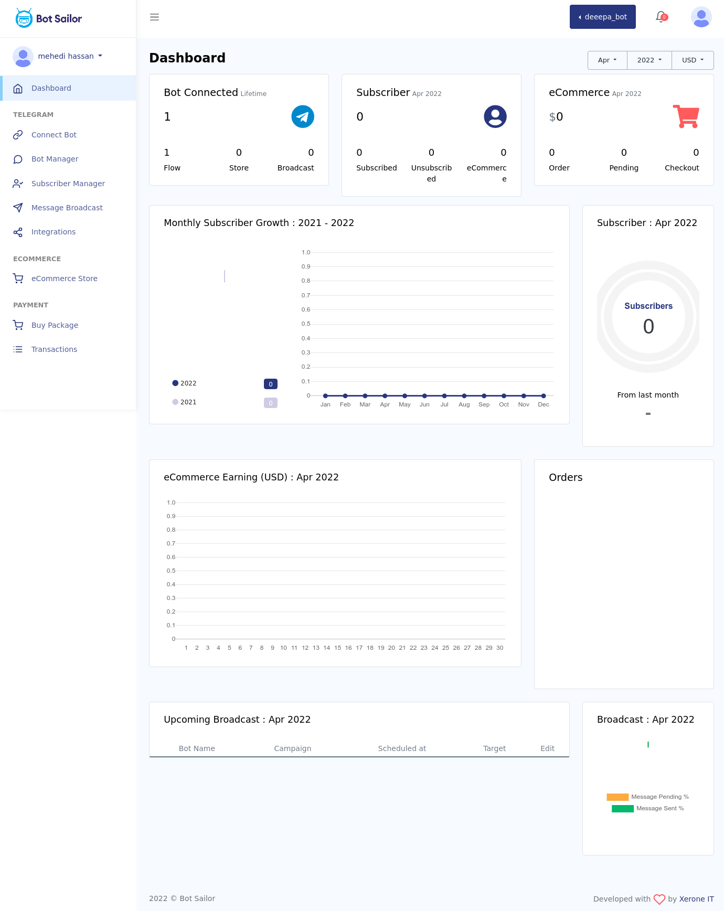

Dashboard
Smooth and steady Dashboard
BotSailor has a properly structured and well designed dashboard. From the Dashboard, the users can easily navigate to the different features of the BotSailor. Moreover, the Dashboard show you the information about your bot activities with graphical Analytics. Simply put, the BotSailor’s Dashboard is designed in such a way that the users can run and handle the application appropriately and efficiently.
